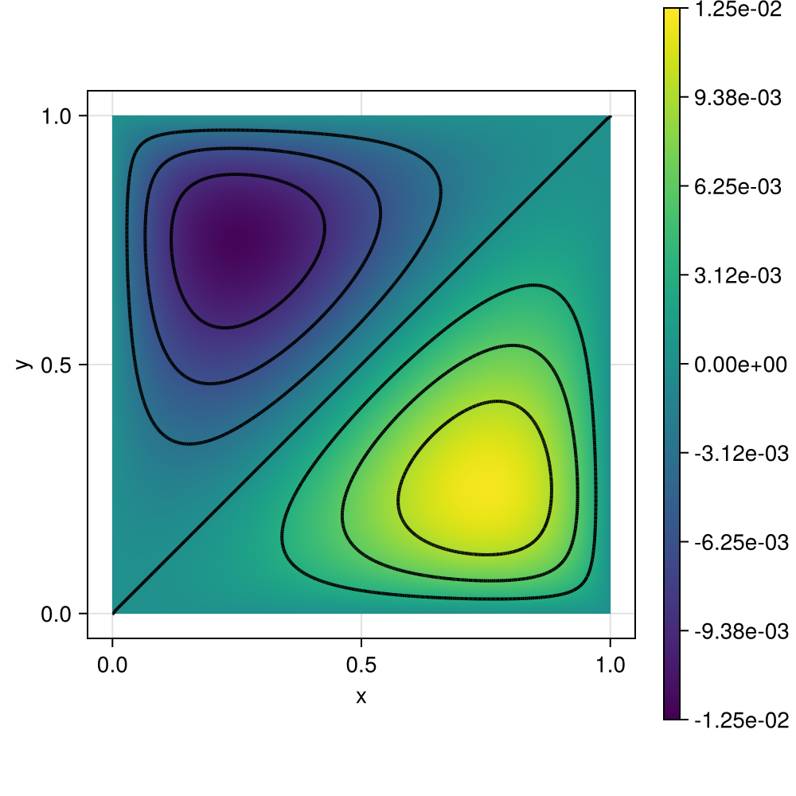

200 : Poisson Problem
This example computes the solution $u$ of the two-dimensional Poisson problem
\[\begin{aligned} -\Delta u & = f \quad \text{in } \Omega \end{aligned}\]
with right-hand side $f(x,y) \equiv xy$ and homogeneous Dirichlet boundary conditions on the unit square domain $\Omega$ on a given grid.
When run, this script also measures runtimes for grid generation, assembly and solving (direct/UMFPACK) for different refinement levels.
The computed solution for the default parameters looks like this:

module Example200_LowLevelPoisson
using ExtendableFEMBase
using ExtendableGrids
using ExtendableSparse
using GridVisualize
using UnicodePlots
using Test #
# data for Poisson problem
const μ = 1.0
const f = x -> x[1] - x[2]
function main(; maxnref = 8, order = 2, Plotter = nothing)
# Finite element type
FEType = H1Pk{1, 2, order}
# run once on a tiny mesh for compiling
X = LinRange(0, 1, 4)
xgrid = simplexgrid(X, X)
FES = FESpace{FEType}(xgrid)
sol, time_assembly, time_solve = solve_poisson_lowlevel(FES, μ, f)
# loop over uniform refinements + timings
plt = GridVisualizer(; Plotter = Plotter, layout = (1, 1), clear = true, resolution = (500, 500))
loop_allocations = 0
for level ∈ 1:maxnref
X = LinRange(0, 1, 2^level + 1)
time_grid = @elapsed xgrid = simplexgrid(X, X)
time_facenodes = @elapsed xgrid[FaceNodes]
FES = FESpace{FEType}(xgrid)
println("\nLEVEL = $level, ndofs = $(FES.ndofs)\n")
if level < 4
println(stdout, unicode_gridplot(xgrid))
end
time_dofmap = @elapsed FES[CellDofs]
sol, time_assembly, time_solve = solve_poisson_lowlevel(FES, μ, f)
# plot statistics
println(stdout, barplot(["Grid", "FaceNodes", "celldofs", "Assembly", "Solve"], [time_grid, time_facenodes, time_dofmap, time_assembly, time_solve], title = "Runtimes"))
# plot
scalarplot!(plt[1,1], xgrid, view(sol.entries, 1:num_nodes(xgrid)), limits = (-0.0125,0.0125))
end
return sol, plt
end
function solve_poisson_lowlevel(FES, μ, f)
Solution = FEVector(FES)
FES = Solution[1].FES
A = FEMatrix(FES, FES)
b = FEVector(FES)
println("Assembling...")
time_assembly = @elapsed @time begin
loop_allocations = assemble!(A.entries, b.entries, FES, f, μ)
# fix boundary dofs
begin
bdofs = boundarydofs(FES)
for dof in bdofs
A.entries[dof, dof] = 1e60
b.entries[dof] = 0
end
end
ExtendableSparse.flush!(A.entries)
end
# solve
println("Solving linear system...")
time_solve = @elapsed @time copyto!(Solution.entries, A.entries \ b.entries)
return Solution, time_assembly, time_solve
end
function assemble!(A::ExtendableSparseMatrix, b::Vector, FES, f, μ = 1)
xgrid = FES.xgrid
EG = xgrid[UniqueCellGeometries][1]
FEType = eltype(FES)
L2G = L2GTransformer(EG, xgrid, ON_CELLS)
# quadrature formula
qf = QuadratureRule{Float64, EG}(2 * (get_polynomialorder(FEType, EG) - 1))
weights::Vector{Float64} = qf.w
xref::Vector{Vector{Float64}} = qf.xref
nweights::Int = length(weights)
cellvolumes = xgrid[CellVolumes]
# FE basis evaluator and dofmap
FEBasis_∇ = FEEvaluator(FES, Gradient, qf)
∇vals = FEBasis_∇.cvals
FEBasis_id = FEEvaluator(FES, Identity, qf)
idvals = FEBasis_id.cvals
celldofs = FES[CellDofs]
# ASSEMBLY LOOP
loop_allocations = 0
function barrier(EG, L2G::L2GTransformer)
# barrier function to avoid allocations by type dispatch
ndofs4cell::Int = get_ndofs(ON_CELLS, FEType, EG)
Aloc = zeros(Float64, ndofs4cell, ndofs4cell)
ncells::Int = num_cells(xgrid)
dof_j::Int, dof_k::Int = 0, 0
x::Vector{Float64} = zeros(Float64, 2)
loop_allocations += @allocated for cell ∈ 1:ncells
# update FE basis evaluators
FEBasis_∇.citem[] = cell
update_basis!(FEBasis_∇)
# assemble local stiffness matrix
for j ∈ 1:ndofs4cell, k ∈ j:ndofs4cell
temp = 0
for qp ∈ 1:nweights
temp += weights[qp] * dot(view(∇vals, :, j, qp), view(∇vals, :, k, qp))
end
Aloc[j, k] = temp
end
Aloc .*= μ * cellvolumes[cell]
# add local matrix to global matrix
for j ∈ 1:ndofs4cell
dof_j = celldofs[j, cell]
for k ∈ j:ndofs4cell
dof_k = celldofs[k, cell]
if abs(Aloc[j, k]) > 1e-15
# write into sparse matrix, only lines with allocations
rawupdateindex!(A, +, Aloc[j, k], dof_j, dof_k)
if k > j
rawupdateindex!(A, +, Aloc[j, k], dof_k, dof_j)
end
end
end
end
fill!(Aloc, 0)
# assemble right-hand side
update_trafo!(L2G, cell)
for j ∈ 1:ndofs4cell
# right-hand side
temp = 0
for qp ∈ 1:nweights
# get global x for quadrature point
eval_trafo!(x, L2G, xref[qp])
# evaluate (f(x), v_j(x))
temp += weights[qp] * idvals[1, j, qp] * f(x)
end
# write into global vector
dof_j = celldofs[j, cell]
b[dof_j] += temp * cellvolumes[cell]
end
end
end
barrier(EG, L2G)
flush!(A)
return loop_allocations
end
function generateplots(dir = pwd(); Plotter = nothing, kwargs...)
~, plt = main(; Plotter = Plotter, kwargs...)
scene = GridVisualize.reveal(plt)
GridVisualize.save(joinpath(dir, "example200.png"), scene; Plotter = Plotter)
end
FEType = H1Pk{1, 2, order}
X = LinRange(0, 1, 64)
xgrid = simplexgrid(X, X)
FES = FESpace{FEType}(xgrid)
A = FEMatrix(FES, FES)
b = FEVector(FES)
@info "ndofs = $(FES.ndofs)"
# first assembly causes allocations when filling sparse matrix
loop_allocations = assemble!(A.entries, b.entries, FES, f, μ)
@info "allocations in 1st assembly: $loop_allocations"
# second assebly in same matrix should have allocation-free inner loop
loop_allocations = assemble!(A.entries, b.entries, FES, f, μ)
@info "allocations in 2nd assembly: $loop_allocations"
@test loop_allocations == 0
end #moduleThis page was generated using Literate.jl.